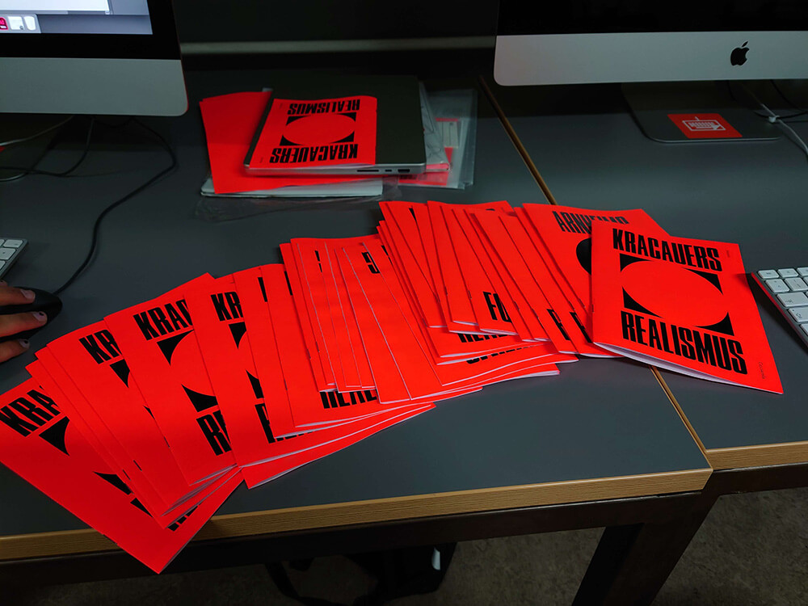

In the face of digitalization and the concomitant proliferation of images, the question of reality is by no means a simple one. When Jean Baudrillard speaks of a »disappearance of the real« (Baudrillard, 1978), the theses of Siegfried Kracauer may appear outdated. Nevertheless, Siegfried Kracauer was one of the most influential film theorists of all time. To conceive of film sociologically as a »mirror of society« is a profoundly timeless understanding of the medium. For him, the moving image enables the disclosure of unmediated reality.
He speaks of a formative and a realist tendency–analogous to the distinction between the works of the Lumière brothers and those of Georges Méliès. In this context, the concept of the revelation of reality assumes a central role. Kracauer further differentiates within this mode of representation between registration and revelation. Every shot is registering, but not every shot is revelatory. It becomes revelatory once a shot presents something that remains invisible to ordinary perception. What nevertheless remains visible and uncontested is his significance for film history.
Excerpt from the brochure, written by me
Im Angesicht der Digitalisierung und die damit einhergehende Vervielfältigung von Bildern, ist die Frage nach der Realität eine durchaus komplexe. Wenn Jean Baudrillard von einem »Verschwinden des Realen« (Baudrillard, 1978) spricht, scheinen die Thesen Kracauers veraltet. Dennoch war Siegfried Kracauer einer der einflussreichsten Filmtheoretiker aller Zeiten. Den Film soziologisch als »Spiegel der Gesellschaft« zu begreifen, ist eine hochgradig zeitlose Auffassung des Mediums. Das Bewegtbild ermöglicht für ihn das Aufzeigen der unverstellten Realität.
Er spricht von einer formgebenden und realistischen Tendenz – ähnlich wie bei der Unterscheidung zwischen den Werken der Brüder Lumière und denen eines George Méliès. Hierbei spielt der Begriff Realitätsenthüllung eine zentrale Rolle. Kracauer kategorisiert bei dieser Wiedergabe nochmal genauer zwischen Registrierung und Enthüllung. Jede Einstellung ist registrierend, aber nicht jede ist enthüllend. Sie enthüllt, sobald eine Einstellung etwas präsentiert, das für die gewöhnliche Wahrnehmung unsichtbar bleibt. Was jedoch sichtbar und unumstritten bleibt, ist seine filmgeschichtliche Bedeutung.
Auszug aus der Broschüre, verfasst von mir
